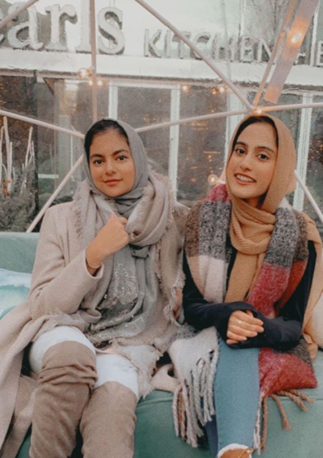
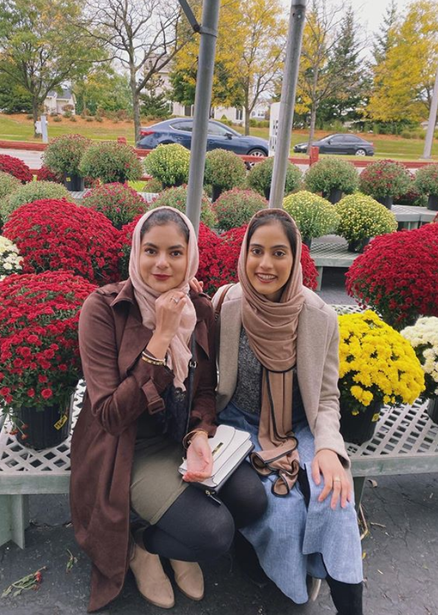

<!DOCTYPE html>
<html lang="en" class="hasjs">
<head>
  <title>Happy Birthday Anam!</title>
  <meta charset="utf-8"/>
  <meta name="viewport" content="width=device-width, initial-scale=1.0">
  <meta http-equiv="X-UA-Compatible" content="ie=edge">
  <link rel="stylesheet" media="screen" href="screen.css" />
  <link href="https://fonts.googleapis.com/css?family=McLaren&display=swap" rel="stylesheet">
  <link href="https://fonts.googleapis.com/css?family=Noto+Sans&display=swap" rel="stylesheet">  	
  <!--Anam Handwriting Font--> 
  <link href="https://fonts.googleapis.com/css2?family=Patrick+Hand+SC&display=swap" rel="stylesheet">
  <script src="script.js" async> </script>  
</head>
<body>
  
</body>
</html>

<!DOCTYPE html>
<html lang="en">
<head>
  <title>Happy Birthday Anam!</title>
  <meta charset="utf-8">
  <meta name="viewport" content="width=device-width, initial-scale=1">
  <link rel="stylesheet" href="https://maxcdn.bootstrapcdn.com/bootstrap/3.4.1/css/bootstrap.min.css">
  <script src="https://ajax.googleapis.com/ajax/libs/jquery/3.5.1/jquery.min.js"></script>
  <script src="https://maxcdn.bootstrapcdn.com/bootstrap/3.4.1/js/bootstrap.min.js"></script>
  <link rel="stylesheet" media="screen" href="screen.css" />
  <link href="https://fonts.googleapis.com/css?family=McLaren&display=swap" rel="stylesheet">
  <link href="https://fonts.googleapis.com/css?family=Noto+Sans&display=swap" rel="stylesheet">  	
  <script src="script.js" async> </script>  

</head>
<body>

<nav class="navbar navbar-inverse">
  <div class="container-fluid">
    <div class="navbar-header">
      <button type="button" class="navbar-toggle" data-toggle="collapse" data-target="#myNavbar">
        <span class="icon-bar"></span>
        <span class="icon-bar"></span>
        <span class="icon-bar"></span>                        
      </button>
      <a class="navbar-brand" href="index.html">Some kind words from ...</a>
    </div>
    <div class="collapse navbar-collapse" id="myNavbar">
      <ul class="nav navbar-nav">
        <li class="active"><a href="#">Kinza and Wardha</a></li>
        <li><a href="person1.html">Sana</a></li>
        <li><a href="asna.html">Asna</a></li>
        <li><a href="freshman.html">Favorite Freshmen</a></li>
        <li><a href="malikah.html">Malikah</a></li>
		<li><a href="fambam.html">Fam Bam</a></li>
        <li><a href="links.html">Click me :)</a></li>
		<li><a href="tiktok.html">Our TikToks</a></li>
      </ul>
    </div>
  </div>
</nav>

<div class="jumbotron">
  <div id="ourpageheader" class="container text-center">
    <h1>Psyched for Our School Friend, Anam! </h1>      
    <p>I mean...what were you expecting from your two extra ITM best friends?</p>
  </div>
</div>
</style>
</head>
<body>

<!-- Slideshow container -->

<div class="slideshow-container">

  <!-- Full-width images with number and caption text -->
  <div class="mySlides fade">
    <div class="numbertext">1 / 15</div>
    
    <div class="text">Our first trio pic</div>
  </div>

  <div class="mySlides fade">
    <div class="numbertext">2 / 15</div>
    
    <div class="text">I-gloo(d) Together ahah</div>
  </div>

  <div class="mySlides fade">
    <div class="numbertext">3 / 15</div>
    
    <div class="text">A Gourd Day</div>
  </div>
  
  <div class="mySlides fade">
    <div class="numbertext">4 / 15</div>
    
    <div class="text">Anams Bday Last year</div>
  </div>
  
  <div class="mySlides fade">
    <div class="numbertext">5 / 15</div>
    
    <div class="text">PAL Fest</div>
  </div>
  
  <div class="mySlides fade">
    <div class="numbertext">6 / 15</div>
    
    <div class="text">La Vie En Anam</div>
  </div>
  
  <div class="mySlides fade">
    <div class="numbertext">7 / 15</div>
    
    <div class="text"> Our "study" Dates</div>
  </div>
  
  <div class="mySlides fade">
    <div class="numbertext">8 / 15</div>
    
    <div class="text">Cozy WOzy</div>
  </div>
  
  <div class="mySlides fade">
    <div class="numbertext">9 / 15</div>
    
    <div class="text">Our first time eating out together</div>
  </div>
  
  <div class="mySlides fade">
    <div class="numbertext">10 / 15</div>
    
    <div class="text">Oui Oui</div>
  </div>
  
  <div class="mySlides fade">
    <div class="numbertext">11 / 15</div>
    
    <div class="text">Lowkey High Tea</div>
  </div>
  
  <div class="mySlides fade">
    <div class="numbertext">12 / 15</div>
    
    <div class="text">First time meeting the famm</div>
  </div>
  
  <div class="mySlides fade">
    <div class="numbertext">13 / 15</div>
    
    <div class="text">L o L</div>
  </div>  
  
  <div class="mySlides fade">
    <div class="numbertext">14 / 15</div>
    
    <div class="text">lowwelyy day </div>
  </div>
  
  <div class="mySlides fade">
    <div class="numbertext">15 / 15</div>
    
    <div class="text">galentine > valentine</div>
  </div>  
  <!-- Next and previous buttons -->
  <a class="prev" onclick="plusSlides(-1)">&#10094;</a>
  <a class="next" onclick="plusSlides(1)">&#10095;</a>
</div>
<br>

<!-- The dots/circles -->
<div style="text-align:center">
  <span class="dot" onclick="currentSlide(1)"></span>
  <span class="dot" onclick="currentSlide(2)"></span>
  <span class="dot" onclick="currentSlide(3)"></span>
  <span class="dot" onclick="currentSlide(4)"></span>
  <span class="dot" onclick="currentSlide(5)"></span>
  <span class="dot" onclick="currentSlide(6)"></span>
  <span class="dot" onclick="currentSlide(7)"></span>
  <span class="dot" onclick="currentSlide(8)"></span>
  <span class="dot" onclick="currentSlide(9)"></span>
  <span class="dot" onclick="currentSlide(10)"></span>
  <span class="dot" onclick="currentSlide(11)"></span>
  <span class="dot" onclick="currentSlide(12)"></span>
  <span class="dot" onclick="currentSlide(13)"></span>
  <span class="dot" onclick="currentSlide(14)"></span>
  <span class="dot" onclick="currentSlide(15)"></span>
</div>

<div style="text-align:center">
	<div>
	<video width="420" height="340" class="container text-center" controls>
	<source src="pics/tiktok/6.mp4" type="video/mp4">
Your browser does not support the video tag.
</video>
</div>

<div style="text-align:center">
	<div>
	<video width="420" height="340" class="container text-center" controls>
	<source src="pics/tiktok/5.mp4" type="video/mp4">
Your browser does not support the video tag.
</video>
</div>


<div>
<!-- Kinza's paragraph -->
<h2> Happy happy birthday Anamimii! </h2>
<h3>The big TWO OH!! Two decades since the world has been blessed with your presence. </h3>
<!-- Wardha's paragraph -->
<h3 id="malikah"> Happy 20th day of birth to my favorite khutti everrrr </h3>
    <h4 id="malikah"> WOW shes no longer a teenager, how does it feel? You know im a bruh girl so I find it very difficult to be soft, especially to you, who I can be free to; roast, bake, fry, and burn as much as I want without you crying.That is one of the many things i really appreciate about our friendship among so many other things, like the fact that you tell everything like it is, you motivate me in so many ways with your words and your actions, you make me laugh, and you listen to me talk on and on and on. Its been 2 years since you first messaged me on facebook as a random hijabi chick who found me on the facebook IIT page. Now here we are, still making memories even in corona time that we can carry with us forever, which is hopefully how long our friendship will go on iA, and even after in jannat. I read a hadith somewhere that said to have as many true friends as possible because they are the supplies in joy and the shelters in misfortunes, you and kinza are two of the truest friends to bless my life and i appreciate you more than words can tell. I am also extremely proud of you for being such a hard working, generous, and dedicated woman of science. What a gift to get to be around for all your accomplishments now and in the future iA. I know youll go on to change the world in some way, shape, or form and Ill always be here to help you in any way that i can.I have realized that, no matter where you are, or what you are doing, or who you are with, i will always honestly, truly, completely love you ( lol movie reference but applies). Even when we get busy with life, just know theres a special spot in my heart reserved for you and our friendship that surpassses time and space, which means you can come to me to share your burdens and secrets no matter what day or time. I hope this new year brings you so much happiness, blessings, and success. I hope you exceed even your own goals for yourself and enjoy every second of your life because you deserve nothing less. <3 </h4> 
    <h3 id="malikahright">  Happy Birthday Sunshine </h3>
    <h3 id="malikahright"> XO, Wardha </h3>

</div>

<footer class="container-fluid text-center">
  <p>Website Created By Wardha & Kinza</p>
</footer>

</body>
</html>
